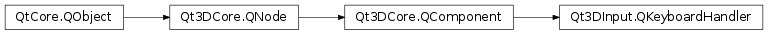

Qt3DInput.QKeyboardHandler¶
Synopsis¶
Functions¶
- def
focus() - def
sourceDevice()
Slots¶
- def
setFocus(focus) - def
setSourceDevice(keyboardDevice)
Signals¶
- def
asteriskPressed(event) - def
backPressed(event) - def
backtabPressed(event) - def
callPressed(event) - def
cancelPressed(event) - def
context1Pressed(event) - def
context2Pressed(event) - def
context3Pressed(event) - def
context4Pressed(event) - def
deletePressed(event) - def
digit0Pressed(event) - def
digit1Pressed(event) - def
digit2Pressed(event) - def
digit3Pressed(event) - def
digit4Pressed(event) - def
digit5Pressed(event) - def
digit6Pressed(event) - def
digit7Pressed(event) - def
digit8Pressed(event) - def
digit9Pressed(event) - def
downPressed(event) - def
enterPressed(event) - def
escapePressed(event) - def
flipPressed(event) - def
focusChanged(focus) - def
hangupPressed(event) - def
leftPressed(event) - def
menuPressed(event) - def
noPressed(event) - def
numberSignPressed(event) - def
pressed(event) - def
released(event) - def
returnPressed(event) - def
rightPressed(event) - def
selectPressed(event) - def
sourceDeviceChanged(keyboardDevice) - def
spacePressed(event) - def
tabPressed(event) - def
upPressed(event) - def
volumeDownPressed(event) - def
volumeUpPressed(event) - def
yesPressed(event)
Detailed Description¶
Provides keyboard event notification
-
class
PySide2.Qt3DInput.Qt3DInput.QKeyboardHandler([parent=nullptr])¶ Parameters: parent – PySide2.Qt3DCore.Qt3DCore::QNodeConstructs a new
QKeyboardHandlerinstance with parentparent.
-
PySide2.Qt3DInput.Qt3DInput.QKeyboardHandler.asteriskPressed(event)¶ Parameters: event – PySide2.Qt3DInput.Qt3DInput::QKeyEvent
-
PySide2.Qt3DInput.Qt3DInput.QKeyboardHandler.backPressed(event)¶ Parameters: event – PySide2.Qt3DInput.Qt3DInput::QKeyEvent
-
PySide2.Qt3DInput.Qt3DInput.QKeyboardHandler.backtabPressed(event)¶ Parameters: event – PySide2.Qt3DInput.Qt3DInput::QKeyEvent
-
PySide2.Qt3DInput.Qt3DInput.QKeyboardHandler.callPressed(event)¶ Parameters: event – PySide2.Qt3DInput.Qt3DInput::QKeyEvent
-
PySide2.Qt3DInput.Qt3DInput.QKeyboardHandler.cancelPressed(event)¶ Parameters: event – PySide2.Qt3DInput.Qt3DInput::QKeyEvent
-
PySide2.Qt3DInput.Qt3DInput.QKeyboardHandler.context1Pressed(event)¶ Parameters: event – PySide2.Qt3DInput.Qt3DInput::QKeyEvent
-
PySide2.Qt3DInput.Qt3DInput.QKeyboardHandler.context2Pressed(event)¶ Parameters: event – PySide2.Qt3DInput.Qt3DInput::QKeyEvent
-
PySide2.Qt3DInput.Qt3DInput.QKeyboardHandler.context3Pressed(event)¶ Parameters: event – PySide2.Qt3DInput.Qt3DInput::QKeyEvent
-
PySide2.Qt3DInput.Qt3DInput.QKeyboardHandler.context4Pressed(event)¶ Parameters: event – PySide2.Qt3DInput.Qt3DInput::QKeyEvent
-
PySide2.Qt3DInput.Qt3DInput.QKeyboardHandler.deletePressed(event)¶ Parameters: event – PySide2.Qt3DInput.Qt3DInput::QKeyEvent
-
PySide2.Qt3DInput.Qt3DInput.QKeyboardHandler.digit0Pressed(event)¶ Parameters: event – PySide2.Qt3DInput.Qt3DInput::QKeyEvent
-
PySide2.Qt3DInput.Qt3DInput.QKeyboardHandler.digit1Pressed(event)¶ Parameters: event – PySide2.Qt3DInput.Qt3DInput::QKeyEvent
-
PySide2.Qt3DInput.Qt3DInput.QKeyboardHandler.digit2Pressed(event)¶ Parameters: event – PySide2.Qt3DInput.Qt3DInput::QKeyEvent
-
PySide2.Qt3DInput.Qt3DInput.QKeyboardHandler.digit3Pressed(event)¶ Parameters: event – PySide2.Qt3DInput.Qt3DInput::QKeyEvent
-
PySide2.Qt3DInput.Qt3DInput.QKeyboardHandler.digit4Pressed(event)¶ Parameters: event – PySide2.Qt3DInput.Qt3DInput::QKeyEvent
-
PySide2.Qt3DInput.Qt3DInput.QKeyboardHandler.digit5Pressed(event)¶ Parameters: event – PySide2.Qt3DInput.Qt3DInput::QKeyEvent
-
PySide2.Qt3DInput.Qt3DInput.QKeyboardHandler.digit6Pressed(event)¶ Parameters: event – PySide2.Qt3DInput.Qt3DInput::QKeyEvent
-
PySide2.Qt3DInput.Qt3DInput.QKeyboardHandler.digit7Pressed(event)¶ Parameters: event – PySide2.Qt3DInput.Qt3DInput::QKeyEvent
-
PySide2.Qt3DInput.Qt3DInput.QKeyboardHandler.digit8Pressed(event)¶ Parameters: event – PySide2.Qt3DInput.Qt3DInput::QKeyEvent
-
PySide2.Qt3DInput.Qt3DInput.QKeyboardHandler.digit9Pressed(event)¶ Parameters: event – PySide2.Qt3DInput.Qt3DInput::QKeyEvent
-
PySide2.Qt3DInput.Qt3DInput.QKeyboardHandler.downPressed(event)¶ Parameters: event – PySide2.Qt3DInput.Qt3DInput::QKeyEvent
-
PySide2.Qt3DInput.Qt3DInput.QKeyboardHandler.enterPressed(event)¶ Parameters: event – PySide2.Qt3DInput.Qt3DInput::QKeyEvent
-
PySide2.Qt3DInput.Qt3DInput.QKeyboardHandler.escapePressed(event)¶ Parameters: event – PySide2.Qt3DInput.Qt3DInput::QKeyEvent
-
PySide2.Qt3DInput.Qt3DInput.QKeyboardHandler.flipPressed(event)¶ Parameters: event – PySide2.Qt3DInput.Qt3DInput::QKeyEvent
-
PySide2.Qt3DInput.Qt3DInput.QKeyboardHandler.focus()¶ Return type: PySide2.QtCore.boolSee also
PySide2.Qt3DInput.Qt3DInput::QKeyboardHandler.setFocus()
-
PySide2.Qt3DInput.Qt3DInput.QKeyboardHandler.focusChanged(focus)¶ Parameters: focus – PySide2.QtCore.bool
-
PySide2.Qt3DInput.Qt3DInput.QKeyboardHandler.hangupPressed(event)¶ Parameters: event – PySide2.Qt3DInput.Qt3DInput::QKeyEvent
-
PySide2.Qt3DInput.Qt3DInput.QKeyboardHandler.leftPressed(event)¶ Parameters: event – PySide2.Qt3DInput.Qt3DInput::QKeyEvent
Parameters: event – PySide2.Qt3DInput.Qt3DInput::QKeyEvent
-
PySide2.Qt3DInput.Qt3DInput.QKeyboardHandler.noPressed(event)¶ Parameters: event – PySide2.Qt3DInput.Qt3DInput::QKeyEvent
-
PySide2.Qt3DInput.Qt3DInput.QKeyboardHandler.numberSignPressed(event)¶ Parameters: event – PySide2.Qt3DInput.Qt3DInput::QKeyEvent
-
PySide2.Qt3DInput.Qt3DInput.QKeyboardHandler.pressed(event)¶ Parameters: event – PySide2.Qt3DInput.Qt3DInput::QKeyEvent
-
PySide2.Qt3DInput.Qt3DInput.QKeyboardHandler.released(event)¶ Parameters: event – PySide2.Qt3DInput.Qt3DInput::QKeyEvent
-
PySide2.Qt3DInput.Qt3DInput.QKeyboardHandler.returnPressed(event)¶ Parameters: event – PySide2.Qt3DInput.Qt3DInput::QKeyEvent
-
PySide2.Qt3DInput.Qt3DInput.QKeyboardHandler.rightPressed(event)¶ Parameters: event – PySide2.Qt3DInput.Qt3DInput::QKeyEvent
-
PySide2.Qt3DInput.Qt3DInput.QKeyboardHandler.selectPressed(event)¶ Parameters: event – PySide2.Qt3DInput.Qt3DInput::QKeyEvent
-
PySide2.Qt3DInput.Qt3DInput.QKeyboardHandler.setFocus(focus)¶ Parameters: focus – PySide2.QtCore.boolSets the focus to
focus. If focus is not currently set totrue, this component will receive keyboard focus.See also
PySide2.Qt3DInput.Qt3DInput::QKeyboardHandler.focus()
-
PySide2.Qt3DInput.Qt3DInput.QKeyboardHandler.setSourceDevice(keyboardDevice)¶ Parameters: keyboardDevice – PySide2.Qt3DInput.Qt3DInput::QKeyboardDeviceSee also
PySide2.Qt3DInput.Qt3DInput::QKeyboardHandler.sourceDevice()
-
PySide2.Qt3DInput.Qt3DInput.QKeyboardHandler.sourceDevice()¶ Return type: PySide2.Qt3DInput.Qt3DInput::QKeyboardDeviceReturns the current keyboard device.
See also
PySide2.Qt3DInput.Qt3DInput::QKeyboardHandler.setSourceDevice()
-
PySide2.Qt3DInput.Qt3DInput.QKeyboardHandler.sourceDeviceChanged(keyboardDevice)¶ Parameters: keyboardDevice – PySide2.Qt3DInput.Qt3DInput::QKeyboardDevice
-
PySide2.Qt3DInput.Qt3DInput.QKeyboardHandler.spacePressed(event)¶ Parameters: event – PySide2.Qt3DInput.Qt3DInput::QKeyEvent
-
PySide2.Qt3DInput.Qt3DInput.QKeyboardHandler.tabPressed(event)¶ Parameters: event – PySide2.Qt3DInput.Qt3DInput::QKeyEvent
-
PySide2.Qt3DInput.Qt3DInput.QKeyboardHandler.upPressed(event)¶ Parameters: event – PySide2.Qt3DInput.Qt3DInput::QKeyEvent
-
PySide2.Qt3DInput.Qt3DInput.QKeyboardHandler.volumeDownPressed(event)¶ Parameters: event – PySide2.Qt3DInput.Qt3DInput::QKeyEvent
-
PySide2.Qt3DInput.Qt3DInput.QKeyboardHandler.volumeUpPressed(event)¶ Parameters: event – PySide2.Qt3DInput.Qt3DInput::QKeyEvent
-
PySide2.Qt3DInput.Qt3DInput.QKeyboardHandler.yesPressed(event)¶ Parameters: event – PySide2.Qt3DInput.Qt3DInput::QKeyEvent
© 2018 The Qt Company Ltd. Documentation contributions included herein are the copyrights of their respective owners. The documentation provided herein is licensed under the terms of the GNU Free Documentation License version 1.3 as published by the Free Software Foundation. Qt and respective logos are trademarks of The Qt Company Ltd. in Finland and/or other countries worldwide. All other trademarks are property of their respective owners.